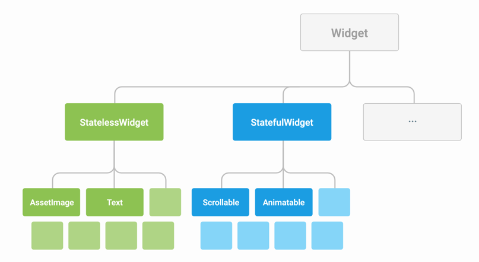
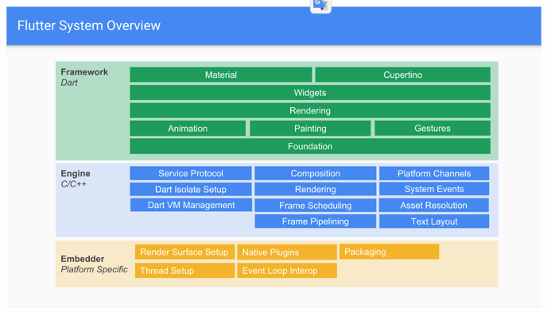

1.1. Flutter是什么？
Flutter是谷歌的移动UI框架，可以快速构建高质量的iOS、Android原生界面，并支持发布到web 浏览器端。
Flutter是一款移动应用程序SDK，一份代码可以同时生成iOS和Android两个高性能、高保真的应用程序。
Flutter包括一个现代的响应式框架、一个2D渲染引擎、现成的widget和开发工具。这些组件可以帮助您快速地设计、构建、测试和调试应用程序。
1.1.1. 核心原则
一切皆为widget
Widget是Flutter应用程序用户界面的基本构建块。每个Widget都是用户界面一部分的不可变声明。 与其他将视图、控制器、布局和其他属性分离的框架不同，Flutter具有一致的统一对象模型：widget。
Widget本身通常由许多更小的、单一用途widget组成，这些widget通过组合、嵌套的方式组合起来产生强大的效果。
例如：Container是一个常用的widget， 由多个widget组成，这些widget负责布局、绘制、定位和调整大小。
widget分类:
- 基础容器widget
- 布局widget
- 装饰widget

分层的框架
Flutter框架是一个分层的结构，每个层都建立在前一层之上。

Engine为Framework提供了完整的运行环境。
Foundation层由dart:ui实现。 dart:ui提供了Framework能够运行的最基础功能，比如绘图，界面刷新，触屏，鼠标等事件的原始信息等。
Rendering层由几个子模块组成：Animation, Painting, Gestures. 在这一层，Flutter提供RenderObject，实现完整的布局，绘制功能。
Widgets层是开发者最常接触到的一层。 Widget是对RenderObject的封装。在Widget层，Flutter实现了响应式开发框架。
Material+Cupertino层，在这一层，Flutter提供了一系列的Widget，其中Material Widget实现了Material Design。Cupertino提供了一系列的iOS-Style的控件。
关于Framework各层级是如何定义的，可以参考这篇文章：https://zhuanlan.zhihu.com/p/59478546